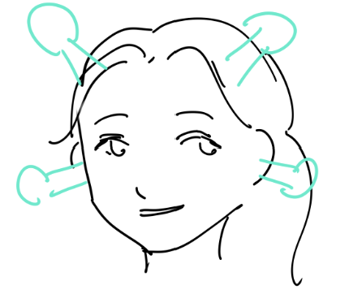
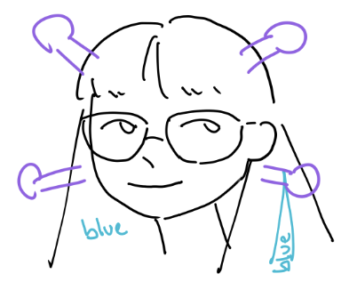
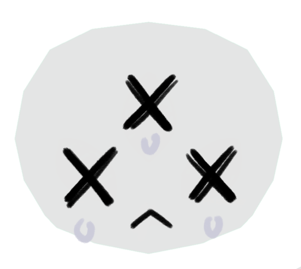

Final Report Draft
CSE 125 · Group 1 · Spring 2026
A. Project Review
Game concept — to what extent did your game concept change from initial concept to what you implemented?

Our game concept was pretty consistent once we had decided on it for the initial project spec, the only major gameplay change I would say is that we removed some collaborative aspects (tasks requiring multiple players to complete) in favor of more chaotic aspects.

One major change is that we remove the randomized winning seats mechanic, which makes it more of a last-man-survival game. I do think it's a reasonable decision that fits with our chaotic gameplay better.
Design — how does your final project design compare to the initial design?
The final project design is very consistent with my initial design idea, the cartoon-ish low-poly render style, which I don't think anything is out of my expectations.
Schedule — how does your final schedule compare with your projected schedule?
During the weeks our progress is definitely delayed from our original plan on the To-do list; however, in the planning stage, we did predict that we would definitely be slower than the plan, so it's still within our expectations? One major thing was that art was making much progress until week 9 I finally put the map together, since I was mainly working on the graphic code. And we made significant progress in the final week, which is also kind of what I expected.
Some tasks definitely took longer than others (e.g. boss pathing, map building) because they were more challenging than expected, and some tasks were started on much later than expected (once again, boss pathing and map building, but also the audio) because of the unexpected amount of infrastructure required to even begin working on those parts.
B. General Questions
Describe your development environment — tools, build workflow, platform support, tips for future groups.
We didn't support MacOS or Linux, which was initially problematic for me because I use Linux. This turned out to be not as much of a problem as I'd initially thought because I just camped in the basement all day 👍 (and squeezed as much of my other classes as I could into my off-campus time), but if you have group members who need to be remote (or understandably don't like being stuck in the basement for 8 hours a day), this may not be as good of a solution.
In terms of tools we did use, our repo was hosted on GitHub (obviously) and we used Visual Studio with vcpkg/CMake for packages and building, which was very convenient later on but more problematic in the beginning.
I'm one of the lucky ones who's able to run the game on my gaming laptop, which made my development process so much easier because I can still do work at home.
What group mechanics decisions worked out well, and which ones did not? Why?
Worked well: Camping in the lab. As the weeks progress, I realized that our group doesn't need much micro-management since everyone is very active in communicating and working together, therefore a lot of logistical stuff was dropped (updating timeline, doing code post, writing pr details, etc). At the end, we still follow a very good code-review process pipeline (thanks to our pr master), which I'm glad of.
Working well: seconding camping in the lab, as well as getting to know a lot of the code that you aren't writing — it's great for building team spirit. And snacks.
Not working so well: we had difficulty separating tasks at the beginning (outside of Luna camping the entire graphics aspect) so there were issues with overlap and people doing the same thing in different ways. We additionally had issues where task separation wasn't as good as we thought it would be (e.g. a task depending on someone else's task, but they were busy with other classes, etc); greater flexibility with who does what and taking over tasks might've helped earlier on.
Which aspects of the implementation were more difficult than expected, and which were easier? Why?
As someone who doesn't really play video games, I was surprised by the difficulty of implementing the boss (two weeks straight of unsatisfying boss pathing and/or boss having a seizure). The audio was easier than expected despite everyone telling me it would be easy. Something I expected to be hard but was still harder than I thought was actually testing my changes (especially audio triggers on certain events) because I had severe skill issues.
Which aspects of the project are you particularly proud of? Why?
Every part :)
From a finished product point of view, the audio was a lot of fun and added a lot to the game in proportion to the amount of code I had to write. From a developer perspective, I'm pretty proud of how the system turned out as a whole.
What was the most difficult software problem you faced, and how did you overcome it?
The random lagging on my laptop? Turns out to be a 1-line network code error that Claude's code spent 20 minutes to figure out for me.
The random lagging was never an actual problem for me because I had too many skill issues to attempt playing the game. Jokes aside, the code I worked on was never particularly difficult and we didn't really run into any game-breaking bugs — the greatest difficulty was for our flashbang effect: I wanted to pause the background music but I couldn't figure out how. It turned out that checking if FMOD isn't playing a sound isn't sufficient to determine that it's finished playing; the FMOD_STUDIO_PLAYBACK_STOPPED status exists for this very purpose.
Detail your tool chain for modeling, exporting, and loading meshes, textures, and animations.
For assimp (model loading) Luna can probably give more in-depth tips, but learnopengl.com/Model-Loading/Assimp and the official Assimp documentation were the sources I used.
For audio, we used FMOD, which was pretty intuitive with many tutorials available online. The only thing that took a little bit was setting global parameters (which you set from the audio system object) vs. setting local parameters (which you set from the event instance object).
We actually used mostly tinygltf to replace Assimp in later stages of the model/animation loading. Assimp is still used for glb model loading and parsing the file, but it might reorder vertices that would mess up with the joint weight of the skeletons. Tinygltf is used on top of assimp to read the GLB Skeletons. It also reads the VRM model extension, which allows us to add the mToon shader effect from the models.
I think using VRM material is one thing I did that kind of stood out from other groups: there is a Blender extension for it, and I found their shader code online and applied it into my game for the visual effect. Normally, it's commonly used in anime-style models such as Genshin Impact or Vtuber models.
An overview of the tool chain:Blender (VRM material) → export .GLB → load model via tinygltf → mToon shader + shadow map → Draw() onto scene
If the model contains Skeleton Animation, it will go through the animator pipeline by loading the Skeleton + Skin + GLTFClips instead and getting drawn onto the scene.
Which networking, physics, audio, or GUI libraries did you use — would you use them again?
We used FMOD for audio, and I would say that for our purposes (many one-off spatial sound effects and different game phase bgm loops), it served pretty well. The documentation is a bit of a pain to use, but the simplicity of the API mitigates most of the pain.
The most useful library we used is ImGui (Immediate Mode GUI), a debug/editor overlay that renders using our existing graphics API. We used it to build our editor window, debug window, and even UI and some graphic effects. It is especially useful as I made it into an Editor window that works together with our JSON maker tool — users are able to directly edit the map using the ImGui panels, read and write into our JSON files. I think the method calls and documentation are very intuitive, which makes it very easy to pick up and use during the development process.
If you used an LLM as part of your development process, what did you use it for and how well did it work?
I used Copilot code completions during the latter half of the quarter after I switched lab machines and forgot to turn it off. I would say that it wasn't as helpful earlier on in the project (hence why I turned it off) when we were designing our system, but once we had well established patterns, it was pretty good at filling in repetitive code. I didn't consult LLMs directly, although that's more of a habit of tunnel vision and preferring to read documentation/sketchy Stack Overflow posts.
If you used an implementation language other than C++, describe the environment, libraries, and tools.
We used standard C++ and OpenGL for graphics.
How many lines of code did you write for your project?
15,341 lines from 112 files. I used the PowerShell command:(Get-ChildItem "src","include" -Recurse -File | Where-Object { $_.Extension -ne ".json" -and $_.Name -ne "stb_image.h" } | Get-Content | Measure-Object -Line).Lines
Which gives all the .h/.cpp files we have in the src and include directory, excluding the .json files we have for the map, and stb_image.h (the 8k-line glb image import).
What lessons about group dynamics did you learn from working in such a large group over an extended period?
Spending a lot of time with people kind of naturally brings you together. I was worried about not being able to get along since everyone in the group knew each other beforehand (except me), but it was surprisingly easy for me to meld in.
I still think it takes both luck and effort: I'm lucky to be in a team that we actually share a common interest and really come along, share similar working habits, etc. At the same time, putting effort into communication and spending time working collaboratively is also really important to build up our group bond.
Looking back over the past 10 weeks, is there anything you would do differently?
Clear delineation of tasks would have helped a lot I think, and to achieve that we would have needed to plan out the architecture of our server/client at the beginning, so I would probably do that.
Which courses at UCSD do you think best prepared you for CSE 125?
CSE 169 is a must for a graphics person — that class basically gives you everything you need for basic graphic effects if you are using C++ and OpenGL.
Any course that has you thinking about a large system and how the parts work together (e.g. CSE 120, 124). I believe that the technical aspects can be learned on the fly, but developing thinking patterns that put your work in the context of the entire system is pretty important. CSE 167 is also important if you plan on touching anything graphics related (OpenGL, making shapes, model/camera/view/whatever matrices, etc), which I fortunately did not have to do past week 2 :D
What were the most valuable things that you learned in the class?
Aside from obvious pain and gain from the technical aspect, I learned more about communicating, trust, and supporting each other within such a great team. As someone always in the mindset of "worst case I will just do everything", this class makes me realize it's impossible to do everything — we need to work together as a team. Every moment we spent together this quarter is the most valuable experience I gained in this class.
I learned that there is a lot that can be squeezed out of two days. I also learned that it's very easy for 10 weeks to go by like they were nothing! Not sure I like how time passes.
Please post four final screenshots of your game.
C. Optional Feedback
For the pizza celebration after the demos — should we do it in B270 again so people can play each other's games?
I really like the pizza celebration idea even though I couldn't stay :)
It was great I loved it.
What advice or tips would you give students who will take the course next year?
Communication and proactivity are key. It's important to communicate what you'll do before you do it (so there isn't overlap between tasks — sorry Richard...), and it's important to communicate asap so you don't leave people waiting on tasks you're not working on. On the proactivity side, there's a balance between giving people time to do their thing and needing to get things done by the end of 10 weeks — it's much better to err on the latter side than the former.
Be ready to be dedicated to this course.
Do you have any suggestions for improving the course?
Hold it in the winter so seniors don't have to deal with the double whammy of leaving both 125 and their undergrad as a whole ): (jokes aside, emphasis on in-person group work or planning ahead might help, but then again, I'm not sure how well students would follow it anyway.)
Any other comments or feedback?
I know I have everyone's discords etc etc but I'm still going to miss y'all after we go our merry ways :(

?